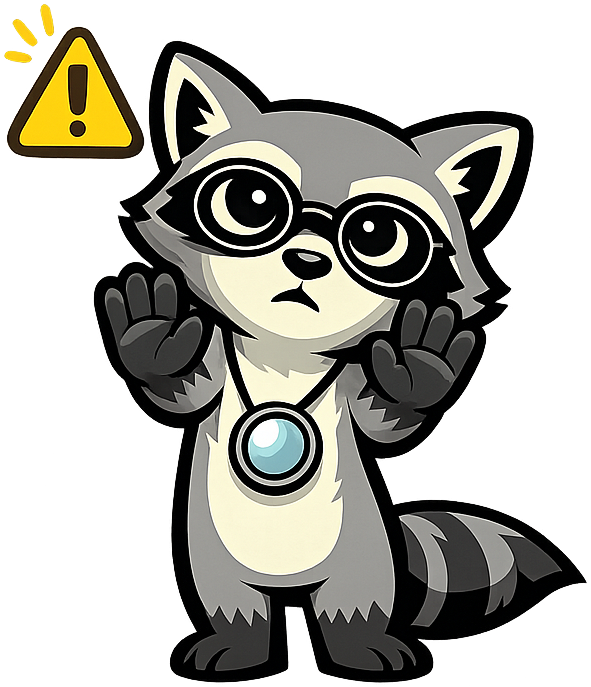

Trust and Digital Networks
Summary
This chapter introduces the fundamental problem of establishing trust between parties who do not know each other across digital networks. Students will explore how network architecture shapes trust models, contrasting the client-server approach with peer-to-peer networks, and understanding why trust is the central challenge that all subsequent technologies in this course attempt to solve.
Concepts Covered
This chapter covers the following 8 concepts from the learning graph:
- Trust
- Digital Trust
- Network Fundamentals
- Internet Architecture
- Client-Server Model
- Peer-to-Peer Networks
- Centralized Trust
- Decentralized Trust
Prerequisites
This chapter assumes only the prerequisites listed in the course description.
Rex Says: Trust, but Verify!
Welcome, fellow analysts! Every technology in this course — from certificate authorities to blockchain to zero-knowledge proofs — exists because of one stubborn problem: how do you trust someone you've never met, across a network you don't control? Trust, but verify — let's examine the evidence!
Learning Objectives
After completing this chapter, you will be able to:
- Define trust in the context of digital networks and explain why it is a fundamental architectural problem
- Distinguish between trust in personal relationships and trust in technical systems
- Describe the basic architecture of the internet and how data moves between networked systems
- Compare and contrast the client-server model with peer-to-peer network architectures
- Explain the structural differences between centralized and decentralized trust models
- Identify real-world scenarios where each trust model provides advantages or introduces risks
Why Trust Is the Central Problem
Trust is the foundation on which all commercial, governmental, and personal interactions depend. In face-to-face transactions, trust is established through physical presence, reputation, legal jurisdiction, and social context. A handshake in a shop, a signature on a contract, a face recognized by a bank teller — these are trust mechanisms that humans have refined over thousands of years.
Digital networks destroy nearly all of these mechanisms. When you purchase an item from an online retailer, you cannot see the product, verify the seller's identity through physical cues, or rely on the social accountability that comes from operating within a shared community. The seller faces the same problem in reverse: they cannot verify that your payment is genuine until after they have shipped the goods.
This asymmetry creates what economists call the trust problem — the risk that one party will fail to fulfill their obligations in a transaction where the other party has already committed resources. Every technology examined in this course, from public key infrastructure to blockchain, represents a different architectural approach to solving this problem.
| Trust Mechanism | Physical World | Digital World |
|---|---|---|
| Identity verification | Face recognition, ID cards | Digital certificates, passwords |
| Transaction integrity | Signed paper documents | Digital signatures, hash chains |
| Dispute resolution | Courts, arbitration | Smart contracts, escrow services |
| Reputation | Community knowledge, word of mouth | Rating systems, transaction history |
| Non-repudiation | Witnessed signatures | Cryptographic signatures, logs |
The table above illustrates a key insight: digital trust mechanisms are not fundamentally different from physical ones in purpose — they differ in implementation. Understanding this parallel helps frame the rest of the course. We are not asking "how do we invent trust?" but rather "how do we translate centuries-old trust mechanisms into systems that work across networks at scale?"
Digital Trust
Digital trust is the confidence that a digital system will behave as expected — that data has not been tampered with, that the party on the other end is who they claim to be, and that commitments made electronically will be honored. Unlike personal trust, which develops over time through repeated interactions, digital trust must often be established instantaneously between parties who have never interacted before.
Digital trust rests on three technical pillars:
- Confidentiality — ensuring that only authorized parties can read the data
- Integrity — ensuring that data has not been altered in transit or storage
- Authentication — verifying that parties are who they claim to be
These pillars map directly to the cryptographic building blocks covered in Chapter 2. For now, the important point is that digital trust is not a single technology but a composite property that emerges from multiple mechanisms working together.
Key Insight
Digital trust is never absolute. Every trust architecture makes tradeoffs between cost, performance, and the degree of assurance it provides. The skeptic's question is not "does this system create trust?" but "how much trust does it create, at what cost, compared to alternatives?"
A common mistake in technology evaluation is treating trust as a binary property — either a system is "trusted" or it is not. In practice, trust exists on a spectrum. A system may provide strong authentication but weak integrity guarantees, or excellent data protection but poor identity verification. The Architecture Tradeoff Analysis Method (ATAM), covered in Chapter 13, provides a structured framework for evaluating these tradeoffs.
Network Fundamentals
To understand why digital trust is difficult, you must first understand how digital networks operate. A network is a collection of computing devices connected by communication links that can exchange data. Networks range from a two-computer Bluetooth connection to the global internet connecting billions of devices.
All digital networks share several fundamental characteristics:
- Packet-based communication — data is broken into small packets that travel independently across the network and are reassembled at the destination
- Routing — intermediate devices (routers) forward packets along paths toward their destination, with no guarantee that all packets follow the same route
- Protocols — standardized rules govern how devices communicate, including how connections are established, data is formatted, and errors are handled
- Latency and bandwidth — physical constraints limit how quickly data can travel (latency) and how much data can move simultaneously (bandwidth)
These characteristics have direct implications for trust. Because packets travel through intermediate devices controlled by third parties, any data sent across a network can potentially be intercepted, modified, or redirected. This is not a theoretical concern — it is the operational reality that drives the need for every trust technology in this course.
The Postcard Analogy
Sending data across the internet without encryption is like sending a postcard through the mail. Every postal worker who handles the card can read its contents, and nothing prevents someone from altering the message. Encryption transforms the postcard into a sealed, tamper-evident envelope — but even then, you still need a way to verify that the envelope was sealed by the person who claims to have sent it.
Internet Architecture
The internet is a global network of networks, connected through a layered protocol stack commonly known as TCP/IP. Understanding this architecture is essential because it reveals where trust must be established and where vulnerabilities exist.
The internet protocol stack operates in layers, each responsible for a specific aspect of communication:
| Layer | Protocol | Function | Trust Implication |
|---|---|---|---|
| Application | HTTP, HTTPS, SMTP | User-facing services | Where users interact with trust decisions |
| Transport | TCP, UDP | Reliable delivery | Ensures complete data delivery, not data integrity |
| Network | IP | Routing and addressing | Packets can be intercepted at any hop |
| Link | Ethernet, Wi-Fi | Physical transmission | Vulnerable to local network attacks |
No layer in this stack inherently provides trust. TCP guarantees that packets arrive in order, but it does not guarantee that they haven't been modified by an attacker who intercepted them in transit. HTTP transmits web pages, but it provides no mechanism for verifying the identity of the web server. HTTPS adds a trust layer (via TLS and certificates), but that trust depends entirely on the certificate authority infrastructure examined in Chapter 4.
This layered architecture means that trust is an overlay — something added on top of the basic communication infrastructure rather than built into it. This design choice, made in the early days of the internet when the network connected a small number of trusted academic institutions, has profound consequences for every trust technology we will examine.
Diagram: Internet Protocol Stack and Trust Gaps
Internet Protocol Stack with Trust Gap Annotations
Type: Diagram **sim-id:** internet-trust-gaps**Library:** p5.js
**Status:** Specified **Learning objective:** Understand (L2) — Explain how the layered internet architecture creates specific trust gaps at each layer that must be addressed by additional security mechanisms. **Description:** An interactive diagram showing the four-layer TCP/IP protocol stack as stacked horizontal bars. Each layer is color-coded and labeled with its protocol name, function, and a specific trust gap annotation (e.g., "IP layer: packets can be intercepted at any routing hop"). Hovering over each layer reveals a tooltip with a real-world attack example (e.g., "Man-in-the-middle attack" for the network layer). A toggle button switches between "Without Trust Overlay" (showing the raw stack with red warning icons) and "With Trust Overlay" (showing TLS/certificates layered on top with green check icons). **Canvas:** Responsive width, 500px height. Background: aliceblue. **Controls:** Toggle button for "Without Trust" / "With Trust" view. **Visual elements:** - 4 stacked rectangular bars (Link, Network, Transport, Application) - Each bar shows: layer name, protocol examples, trust gap description - Red warning icons on each layer in "Without Trust" view - Green overlay bars showing TLS, certificates, digital signatures in "With Trust" view - Hover tooltips with attack examples Implementation: p5.js with responsive canvas, hover detection for tooltips
The Client-Server Model
The client-server model is the dominant architecture for internet services. In this model, a client (typically a web browser or mobile app) sends requests to a server (a centralized computer that stores data and processes requests), which returns responses.
Nearly every digital service you use daily — email, web browsing, social media, online banking, cloud storage — operates on the client-server model. The server is the single authoritative source of truth, and clients trust that the server will store their data correctly, process their transactions honestly, and protect their information from unauthorized access.
This architecture has significant implications for trust:
- Single point of authority — the server operator controls all data and logic, meaning users must trust a single entity
- Scalability — centralized servers can be optimized, cached, and replicated efficiently
- Accountability — a single operator can be held legally and contractually responsible
- Vulnerability — if the server is compromised, all users are affected simultaneously
Rex's Tip
When evaluating any trust technology, ask: "Who controls the server?" In the client-server model, the answer is always one entity. That's a feature when you need accountability, and a liability when you need resilience against that entity's failure or misconduct.
The client-server model's reliance on centralized authority is both its greatest strength and its most frequently criticized limitation. Proponents of blockchain often frame this centralization as an inherent flaw. The skeptic's response is to ask: compared to what, and at what cost? Centralized systems have served billions of users reliably for decades. The question is whether specific use cases genuinely require an alternative.
Peer-to-Peer Networks
A peer-to-peer (P2P) network distributes both data and processing across all participating nodes, with no single server acting as the central authority. Every node in a P2P network is simultaneously a client and a server — it can both request data from other nodes and provide data to them.
P2P networks gained widespread public awareness through file-sharing systems like Napster (1999) and BitTorrent (2001), but the architecture has broader applications including distributed computing, content delivery networks, and — most relevant to this course — distributed ledger technologies.
The key characteristics of P2P networks include:
- No single point of failure — if one node goes offline, the network continues to function through remaining nodes
- Distributed data storage — data is replicated across multiple nodes, providing redundancy
- Censorship resistance — no single entity can unilaterally block access to data or services
- Coordination cost — without a central authority, nodes must agree on the state of shared data through consensus mechanisms (covered in Chapter 7)
| Characteristic | Client-Server | Peer-to-Peer |
|---|---|---|
| Authority | Single server operator | Distributed across all nodes |
| Data storage | Centralized | Replicated across nodes |
| Scalability | Vertical (bigger servers) | Horizontal (more nodes) |
| Failure mode | Server failure affects all users | Individual node failure is tolerable |
| Cost structure | Server operator bears infrastructure cost | All participants share cost |
| Trust model | Trust the server operator | Trust the protocol and majority of nodes |
| Coordination | Simple (server decides) | Complex (consensus required) |
This comparison reveals a fundamental architectural tradeoff that will recur throughout this course: centralized systems are simpler and cheaper to operate but require trust in a single entity, while distributed systems eliminate single points of failure but introduce coordination complexity and cost.
Diagram: Client-Server vs. Peer-to-Peer Network Topology
Interactive Network Topology Comparison
Type: MicroSim **sim-id:** network-topology-compare**Library:** p5.js
**Status:** Specified **Learning objective:** Analyze (L4) — Compare and contrast the structural differences between client-server and peer-to-peer network architectures, identifying how topology affects trust, resilience, and coordination. **Description:** A split-screen interactive simulation showing two network topologies side by side. On the left, a client-server network with one large central node (server) connected to 8-12 smaller nodes (clients). On the right, a peer-to-peer network with 8-12 equal-sized nodes interconnected with multiple links. Students can click on any node to "remove" it (simulating failure) and observe the impact on the network. In the client-server view, removing the server disconnects all clients. In the P2P view, removing one node only eliminates direct links to that node while the rest remain connected. **Canvas:** Responsive width, 500px height. Background: aliceblue. Split into two equal halves with labels. **Controls:** - Click any node to toggle it on/off (simulate failure) - "Reset" button to restore all nodes - "Animate Data Flow" button to show packets traveling between nodes **Visual elements:** - Server node: large blue circle with "S" label - Client nodes: smaller green circles with numbers - P2P nodes: medium teal circles with numbers - Active connections: solid gray lines - Data flow: small orange dots moving along connections - Failed node: red X overlay, connections become dashed red - Counter showing: "Active nodes: X/Y" and "Connected clients: X/Y" for each side Implementation: p5.js with responsive canvas, node click detection, animation loop for data flow
Centralized Trust
Centralized trust is a model in which a single authoritative entity vouches for the identities, transactions, or data of all participants in a system. Banks, governments, certificate authorities, and most internet platforms operate on centralized trust. When you log into your bank's website, you trust the bank to maintain accurate records of your balance. When you visit a website secured with HTTPS, you trust a certificate authority to have verified the website operator's identity.
Centralized trust has several well-established advantages:
- Efficiency — a single authority can make decisions quickly without coordinating with other parties
- Accountability — when something goes wrong, there is a clear entity to hold responsible
- Legal framework — existing laws and regulations are designed around centralized authorities (courts, regulators, auditors)
- Cost — operating a centralized trust system is typically orders of magnitude cheaper than operating a distributed one
These are not minor advantages. The global financial system, internet commerce, and government identity systems all operate on centralized trust, serving billions of users at remarkably low per-transaction costs. Any proposal to replace centralized trust with an alternative must demonstrate that the benefits of the alternative outweigh the proven advantages of the existing approach.
Bias Alert

Beware of the false dichotomy between "centralized" and "decentralized" trust. Most real-world systems use a hybrid approach. Even blockchain networks rely on centralized elements — the core development team, mining pool operators, and exchange platforms. The question is not "centralized or decentralized?" but "where along the spectrum does this system sit, and what does that cost?"The vulnerabilities of centralized trust are equally real. A compromised certificate authority can issue fraudulent certificates for any domain. A corrupt bank officer can alter records. A government can freeze assets arbitrarily. These are not hypothetical scenarios — they have all occurred. The question for the technology evaluator is not whether centralized trust has risks, but whether the proposed alternative reduces those risks without introducing worse ones.
Decentralized Trust
Decentralized trust is a model in which no single entity has unilateral authority over the system. Instead, trust emerges from the collective behavior of multiple independent participants following a shared protocol. Blockchain is the most prominent example of decentralized trust, but it is not the only one — the Domain Name System (DNS) and the internet's routing infrastructure both incorporate decentralized trust elements.
Proponents of decentralized trust emphasize several potential benefits:
- Censorship resistance — no single entity can block or reverse transactions
- Fault tolerance — the system continues operating even if some participants fail or act maliciously
- Transparency — all participants can verify the state of the system independently
- Disintermediation — removing intermediaries can reduce fees and counterparty risk
These benefits are genuine in specific contexts. However, they come at substantial costs:
- Computational overhead — achieving consensus across distributed nodes requires significantly more processing power than centralized decision-making
- Coordination complexity — without a central authority, governance decisions are slow and contentious
- Scalability constraints — decentralized systems typically process far fewer transactions per second than centralized alternatives
- Irreversibility risk — the inability to reverse transactions means that errors and fraud have permanent consequences
Key Insight
Decentralized trust does not eliminate the need for trust — it redistributes it. Instead of trusting a single institution, participants must trust the protocol's design, the majority of network participants, and the development team that maintains the software. Whether this redistribution is an improvement depends entirely on the specific use case.
The remainder of this course will equip you with the analytical tools to evaluate that tradeoff rigorously. Chapters 2-5 provide the technical foundations. Chapters 6-11 cover the mechanics and economics of blockchain systems. Chapters 12-14 introduce structured evaluation frameworks. And Chapters 15-20 apply those frameworks to real-world decisions.
Diagram: Trust Model Spectrum
Interactive Trust Model Spectrum
Type: MicroSim **sim-id:** trust-model-spectrum**Library:** p5.js
**Status:** Specified **Learning objective:** Evaluate (L5) — Assess where different trust technologies fall on the centralization-decentralization spectrum and judge the tradeoffs each position entails. **Description:** An interactive horizontal spectrum with "Fully Centralized" on the left and "Fully Decentralized" on the right. Positioned along the spectrum are labeled markers representing real-world trust systems: traditional bank (far left), certificate authority, consortium blockchain, public blockchain, and Bitcoin (far right). Each marker is draggable to encourage students to think about where systems actually fall. Clicking a marker reveals a panel below showing: trust entity, cost profile, throughput, and key tradeoffs. A "Compare" mode allows selecting two markers to display a side-by-side tradeoff comparison table. **Canvas:** Responsive width, 450px height. Background: aliceblue. **Controls:** - Click markers to see detail panel - "Compare" toggle to select two systems for side-by-side comparison - "Reset Positions" button to restore default placement **Visual elements:** - Horizontal gradient bar from blue (centralized) to green (decentralized) - 6-8 positioned circular markers with system labels - Detail panel below spectrum showing: trust entity, cost per transaction, transactions per second, key tradeoff - Comparison table when two markers are selected - Axis labels and tick marks for orientation Implementation: p5.js with responsive canvas, draggable markers, click panels
Key Takeaways
This chapter established the foundational concepts that will inform every subsequent topic in this course:
- Trust is the fundamental problem of digital networks — the inability to verify identity, integrity, and intent across systems controlled by third parties
- Digital trust is a composite property built from confidentiality, integrity, and authentication — it exists on a spectrum, not as a binary state
- Network fundamentals and internet architecture reveal why trust is difficult: the layered protocol stack provides communication but not inherent security
- The client-server model offers simplicity and accountability through centralized authority, at the cost of single-point-of-failure risk
- Peer-to-peer networks eliminate central authority but introduce coordination complexity and cost
- Centralized trust is efficient, legally established, and cost-effective, but vulnerable to corruption and single points of compromise
- Decentralized trust redistributes trust across participants but does not eliminate it — and imposes significant computational, scalability, and governance costs
Excellent Analytical Work!
You now understand why trust is the central architectural problem that drives every technology in this course. More importantly, you've learned to ask the skeptic's question: not "is this system trustworthy?" but "how much trust does it provide, at what cost, compared to what alternative?" That analytical habit will serve you well through every chapter ahead. Outstanding work, fellow analyst!